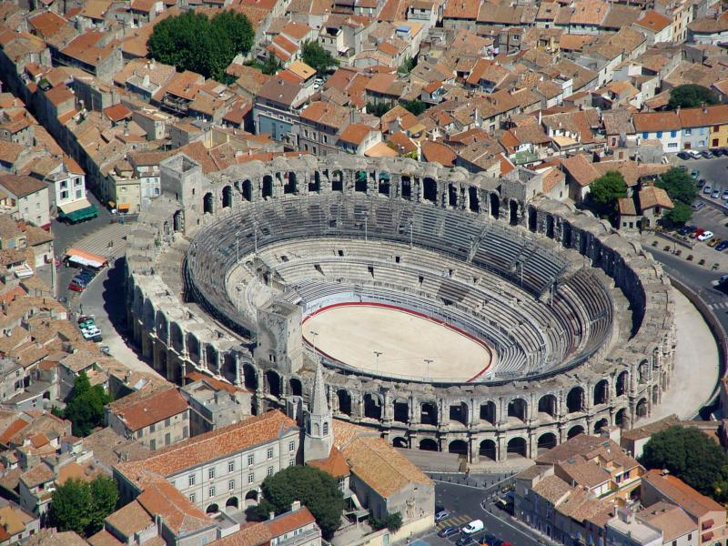

“ Rien ne développe l'intelligence comme les voyages. ”
Emile Zola
LES IMMANQUABLES
Quand on parle de la région PACA, de nombreux lieux sont à voir absolument tant ils sont mythiques. N'hésitez pas à aller voir le pont d'Avignon, la promenade des Anglais à Nice, la Canebière à Marseille, les Gorges du Verdon, les plages de Saint Tropez et tant d'autres lieux magiques.
VISITES CULTURELLES
De nombreux musées et monuments sont à voir dans la région. Rien que sur la ville de Marseille, c'est une vingtaine de musées qui sont visitables, dont le musée de beaux-arts, le plus ancien de la ville. Mais de nombreux autres lieux culturels sont également à voir, comme le fort Queyras ou les arènes d'Arles.
EVENEMENTS
Si vous avez la chance d'y être au bon moment, il vous est fortement recommandé d'assister à des évènements incontournables de la région, comme le Festival de Cannes, les rencontres sportives de club mythiques comme l'Olympique de Marseille en football ou le Racing Club de Toulon en rugby ou encore les divers festivals qui ont lieu tous les ans.